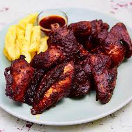

Poussin Chicken

This delicious tangy sauce works great with a variety of foods including fries, but we will be using it as a marinade for some mouthwatering chicken.
Ingredients
- Chicken (boneless diced or bone-in)
- Oil
- Butter (approximately the same amount as oil)
- Spanish Paprika
- Chili Powder
- Citric Acid
- Salt and Pepper
Preperation
- Preheat your oven to 380 F.
- Put your seasoned chicken in a pan with a lid with a generous amount of oil. Place chicken in the oven for 15-20 minutes.
- Time to make your sauce! Melt your butter on medium heat then add your oil.
- Add a generous amount spanish paprika and a little bit of chili powder. Keep stiring being careful not to burn the sauce.
- Add a pinch of citric acid to your sauce, then taste and adjust as needed. Now the sauce is complete!
- When the chicken is finished coking remove the excess oil and mix the poussin sauce with the chicken.
- Enjoy!